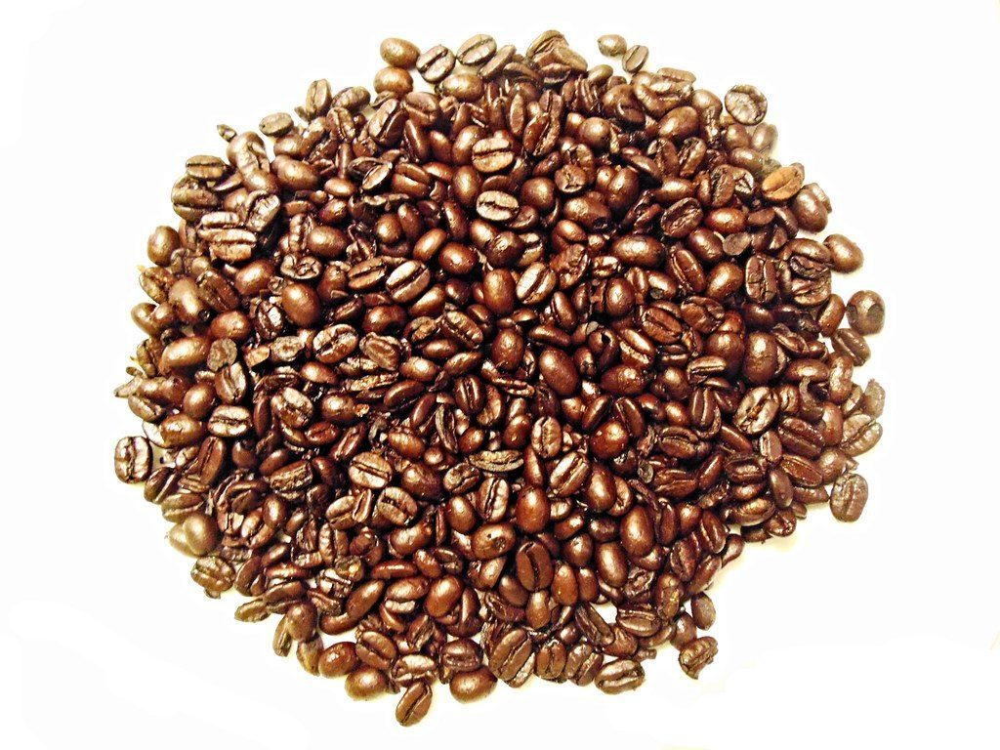
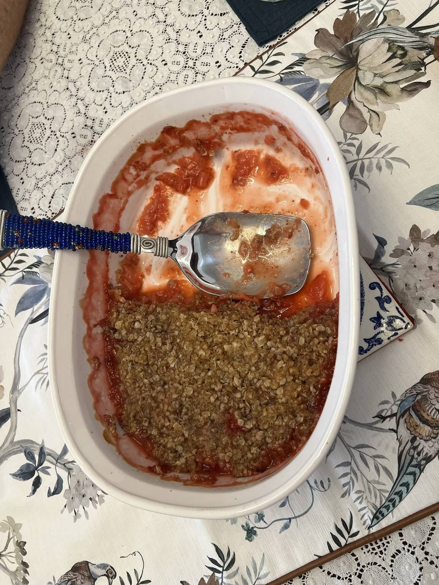

店のこと
ミルクフォーマーの部位の配置図
お店の詳しい情報は準備中です。ここでは、制作側が考えたデザインの考え方を紹介します。


制作側の連想
番号は、部位の番号
ホームの図にある1〜6の番号は、それぞれミルクフォーマーの部位の名前に対応します。ミルクフォーマーの部位を図にしたもので、制作側の連想です。お店の理念・由来とは無関係で、実際の製品の仕様を示すものでもありません。
1泡立てヘッド
軸の先に付いた、ばね状に巻いた針金の部分で、回転させてミルクを泡立てるところ。
2軸(シャフト)
モーターの回転をヘッドへ伝える細い棒の部分で、ステンレス製の形が多い。
3モーター部
胴の下側にあって、軸を回す小さなモーターを収める部分。
4グリップ(胴)
手で握る筒状の部分で、内側に電池を収める形が多い。
5スイッチ
押している間だけ回転するタイプや、押すたびに入り切りするタイプがある。
6電池ぶた
グリップの上端にあるふたで、回して外すと電池を入れ替えられる形がある。
写真(イメージ)
写真(イメージ)



写真はイメージです。お店のものではありません。